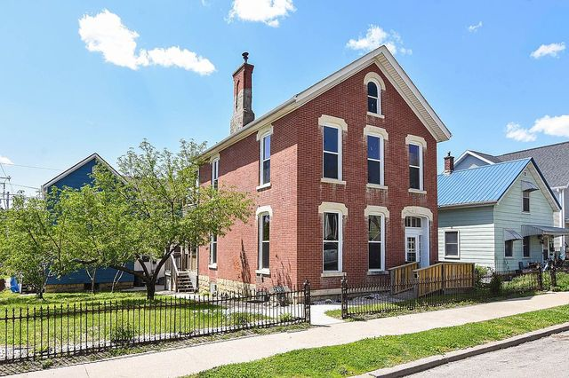

In Dubuque, selling a house in probate is possible, but it can be complicated and take time. While it can be stressful, understanding how the process works can make the experience much more positive. When learning how to sell a house in probate Dubuque residents can follow this simple step-by-step process that outlines what to expect and provides useful tips to help ensure success.
Yes, in Dubuque, it is possible to sell a house in probate. This court-supervised process is done to transfer the title when the house is solely in the decedent’s name and there is no trust. Typically, probate takes between 6 and 12 months to complete, but it can be longer for contested estates. There’s a few factors that impact the length of time a house is in probate, including:
The mandatory creditor period - Under Iowa law, creditors have a 4-month period to file claims after the probate notice is published.
The estate complexity - Simple estates resolve faster than complex ones, which include disputes, business interests, or multiple assets.
The estate size - If the estate is small, it may qualify for an expedited procedure, which can shorten the overall timetable.
Fortunately, Iowa law requires all probate cases to close within three years of their second notice publication, unless the courts grant an extension.
Learn how to sell a house in probate quickly with an all-cash offer from Dubuque Home Buyers!
Selling a house in probate in Dubuque requires court supervision to legally transfer ownership of the property. Here is the step-by-step process.
Before a house can be legally sold, the court must appoint an administrator or executor to manage the estate. This person will receive domiciliary letters that allow them to authorize the sale of the property.
Houses in probate, especially ones with a remaining mortgage balance, must get an appraisal by a certified appraiser to determine their fair market value. This step is crucial for ensuring they’re listed for a competitive price and for securing court approval.
If there’s no explicit statement in the decedent’s will allowing the beneficiary to sell the property, they must petition the Iowa courts in Dubuque County for permission. This step ensures the sale is transparent, fair, and legal, protecting the estate’s assets. Typically, the courts will require that the house be sold for at least 90% of the appraisal value, which protects against low-ball offers.
Once the fair market value of the house is established and the court approves it for sale, you can either list the property with a realtor who is experienced in probate sales or sell it for cash. The type of sale you choose depends on your goals for the estate. A traditional sale may give you a higher return, but you’ll also have to pay realtor fees, and it can take time. A cash sale is fast, and with the right company, you still get fair market value for the property. You also don’t have to worry about staging the house, waiting for it to sell, or making costly repairs. Both options have pros and cons, so you’ll need to consider which one best fits your situation.
Once you receive an offer on the house, either from a traditional or cash buyer, you need to get it approved by the probate court. For supervised sales, there’s a chance the court could allow public overbidding on the property, so that's something to keep in mind. Once the court approves the sale price, you move on to the sixth and final step.
After you get court approval, you can finish the sale of the house. The funds are distributed to the estate, and all foreclosure proceedings are closed.
Since selling a house in pre-foreclosure can be complicated due to court involvement, you can use these tips to help make the process go smoothly.
Use an Experienced Attorney - Since Dubuque probate is handled in the Iowa district court system, a local attorney has the best chance of knowing the specific procedural expectations for the county, which can help avoid unnecessary delays.
Read the Will - If the decedent explicitly designated you as the executor with the power to sell the property, the probate process is much faster. You may not even need prior court approval, so it’s important to read over the will thoroughly and consult your attorney.
Sell “As-Is” - Unfortunately, selling a home on the traditional market takes time and involves a lot of expenses. Many times you’re not expecting to be in the position of probate and executorship, and you may not have the funds to support it. Selling your house as-is for cash takes the strain off since you don’t have to worry about repairs or fees. If you want to expedite the probate process, it may be the best option.
When it comes to knowing how to sell a house in probate Dubuque residents need to follow the correct steps to make sure the process is done legally. If you’re ready to sell your house quickly, turn to Dubuque Home Buyers. With a simple three-step process, you can get fair market value for your property, without fees or closing costs. Many sales are completed in as little as 10 days, so you can have the cash you need in hand. Call 563.227.8157 or visit Dubuque Home Buyers today to learn more.
Disclaimer - This article is for informational purposes only and should not be considered legal, financial, or real estate advice. Homeowners dealing with foreclosure or probate situations should consult with a qualified attorney, financial advisor, or housing counselor to understand their options. Dubuque Home Buyers is a real estate investment company and does not provide legal or financial services.
Get a free, no-obligation cash offer today. No repairs, no commissions, close on your timeline.
Get My Free Cash Offer 📞 Call or Text (563) 227-8157